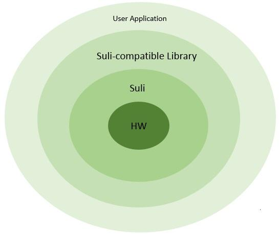

Sounds like a girl’s name? Actually it means Seeed Unified Library Interface. It’s a big thing on our to-do list in the near future.
We have hundreds of sensors, actuators, displays and other useful modules. In the past, we mainly focused on Arduino applications, and supplied Arduino Library only. This means if you used another platform such as Raspberry, LauchPad, or MCS51, you needed to port our Library, and sometimes it’s not easy.
Sometimes when some customers asked us to provide some libraries for a non-Arduino platform, what we could do was telling them “hey man, we only have Arduino library.” Replying the customers in this way made us feel bad.
And we have been thinking what if there’s a way to make our libraries fit all platforms. It’s really a hard task, but not impossible. And we are lucky to figure it out finally: it’s Suli – Seeed Unified Library Interface, which can make almost all of(at least 90%) our libraries fit many common platforms, or at least make it easy to port.
Have a look at the following image,

We can find that there are four circles and the innermost is HW(hardware). Suli will call resources from HW, such as GPIO, I2C, Timer and UART; then Suli-compatible Library, and then User Application. All of our Libraries will call Suli function only. Thus, for different platforms, we can just port Suli, then the Library can be used. That means different platforms have their Suli, Suli for Arudino, Suli for Mbed, Suli for….
Thres are serval points about Suli:
Suli has two files, Suli.h and Suli.cpp(.c). And Suli should implement the following function,
GPIO type:
typedef int IO_T; // IO type typedef int PIN_T; // pin name typedef int DIR_T; // pin direction typedef int ANALOG_T; // pin analog
GPIO state:
#define HAL_PIN_INPUT INPUT // INPUT and OUTPUT was declared in Arduino IDE #define HAL_PIN_OUTPUT OUTPUT #define HAL_PIN_HIGH HIGH // HIGH and LOW was declered in Arduino IDE #define HAL_PIN_LOW LOW
Data type:
typedef signed char int8; typedef unsigned char uint8; typedef signed short int16; typedef unsigned short uint16; typedef signed long int32; typedef unsigned long uint32;
Digital IO Operation:
void suli_pin_init(IO_T *pio, PIN_T pin); // pin initialize void suli_pin_dir(IO_T *pio, DIR_T dir); // set pin direction void suli_pin_write(IO_T *pio, int16 state); // write pin int16 suli_pin_read(IO_T *pio); // read pin uint16 suli_pulse_in(IO_T *pio, uint8 state, uint32 timeout);
Analog IO Operation:
void suli_analog_init(ANALOG_T * aio, PIN_T pin); int16 suli_analog_read(ANALOG_T * aio);
Delay:
void suli_delay_us(uint32 us); // delay us void suli_delay_ms(uint32 ms); // delay ms
Times:
uint32 suli_millis(void); uint32 suli_micros(void);
I2C Interface:
void suli_i2c_init(void * i2c_device); uint8 suli_i2c_write(void * i2c_device, uint8 dev_addr, uint8 *data, uint8 len); uint8 suli_i2c_read(void * i2c_device, uint8 dev_addr, uint8 *buff, uint8 *len);
UART:
void suli_uart_init(void * uart_device, int16 uart_num, uint32 baud); void suli_uart_send(void * uart_device, int16 uart_num, uint8 *data, uint16 len); void suli_uart_send_byte(void * uart_device, int16 uart_num, uint8 data); uint8 suli_uart_read_byte(void * uart_device, int16 uart_num); uint16 suli_uart_readable(void * uart_device, int16 uart_num);
You can find that Suli include digital IO operation, analog IO operation, I2C, and Uart function, maybe it’s not very comprehensive, but base on my experience, it’s enought for quite a lot of our libraries, of curse if we find that we need more funciton someday, we’ll add to it.
Our plan is to make all Seeed libraries Suli compatible and porting Suli of some common platforms. These platforms will include Arduino, Mbed, Mesh Bee, Raspberry, LaunchPad in the first stage. This work is expected be finished before June. Stay tuned